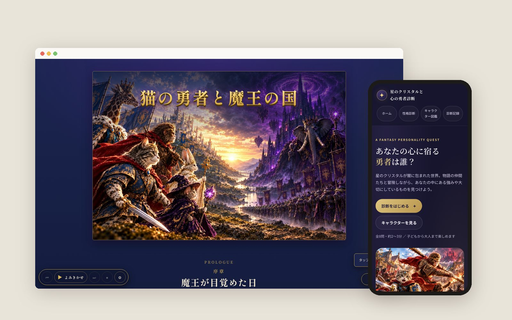
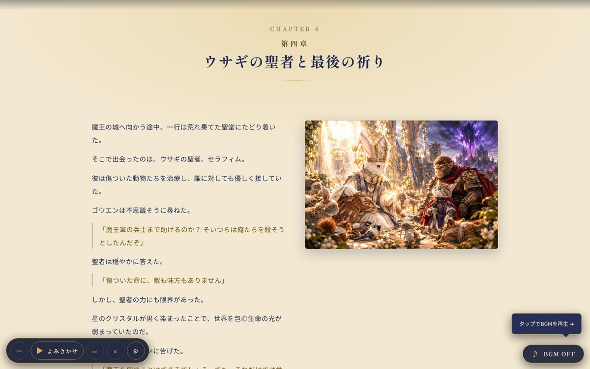
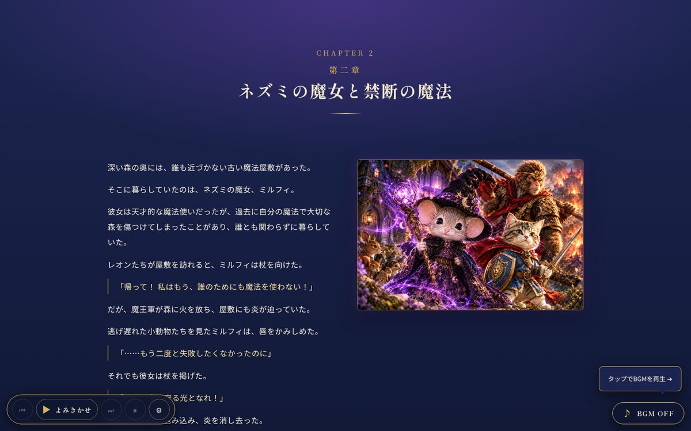
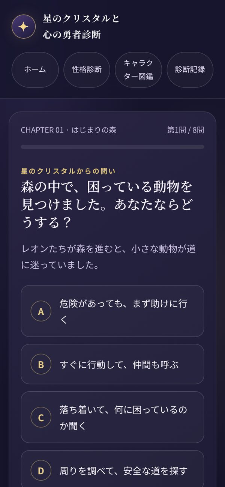
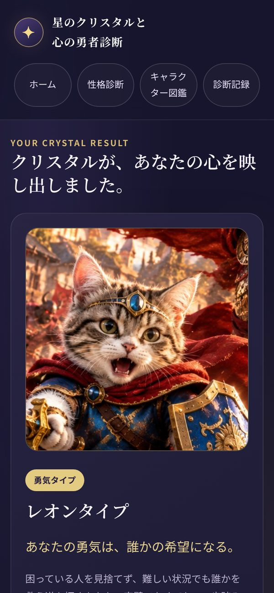

物語サイト・性格診断アプリ／授業課題・ペア制作
猫の勇者と魔王の国
漢字の多い物語を子どもも楽しめるように、読み上げ機能と、章ごとに変わるBGMを加えた物語サイトです。読み終えたあとは、物語のキャラクターと連動した性格診断アプリへ進めます。
- 制作
- 授業課題（2人のペア制作）
- 期間
- 約10日
- 担当
- デザインカンプ（Figma）、読み上げ機能・BGM機能の追加、診断アプリの構成と、物語とアプリを行き来する導線／実装はAIと協働し、押絵、BGMはVS Codeで追加
- ツール
- Figma、Photoshop、Claude、Gemini、ChatGPT、VS Code
- 素材
- 挿絵・キャラクターはAI（Gemini）で生成。BGM、自動読み上げ機能はAI（Claude）で生成

目的とターゲット
ターゲット：大人向けの童話です。読み上げ機能があるので、漢字を読めない子どもも一緒に楽しめます。
コンセプト：子どもから大人まで楽しめる。
デザインカンプ
物語ページのデザインはFigmaで作りました。下の枠の中をスクロールすると、カンプ全体を見られます。
配色は「平和 → 闇 → 光」
挿絵の王国の旗や勇者の服、王冠、魔王城から色を取り出し、色ごとに役割を決めた設計表を作りました。
夜空の紺#0F1630 ベースの背景
ロイヤルブルー#2F55B5 ボタン・リンク
ゴールド#D9B45A 見出し・線に少量
マントの赤#B8262E 差し色
魔王の紫#6B2FB3 背景・枠線のみ
羊皮紙のアイボリー#F3E9D2 明るい背景
さらに、物語の流れを背景色で表すように、章ごとの背景色を決めました。
- 紫は暗い背景では読みにくいので、背景・光・枠線だけに使い、文字はアイボリーかゴールドにする
- ゴールドは見出し・数字・線など少量に使う。面で多く使うと安っぽく見える
- 挿絵に彩度の高い紫やオレンジが多いので、画面側の色は紺・金・アイボリーに絞る
読み上げ機能の工夫
漢字が多く、子どもには読めない部分があるため、ブラウザの読み上げ機能を使って物語を音声で聞けるようにしました。
- 挿絵を見失わない：読み上げに合わせて文字を追うと、挿絵が画面の外へ流れてしまいます。章が終わるまでは、挿絵を画面の上に表示し直すようにしました
- 読んでいる段落を光らせ、自動でスクロールする
- 読み上げ中はBGMの音量を下げる
- 段落をタップすると、そこから読み直せる
- 「古文書」「賢王」など、読み間違えやすい言葉の読み方を補正する
- 声・速さ・高さの設定を保存し、次に開いたときも同じ設定で聞ける


章ごとに変わるBGM
場面に合わせて、章ごとにBGMが切り替わります。音源ファイルは使わず、ブラウザの音声機能（Web Audio）でその場で音を鳴らしているため、ページが重くなりません。
物語と連動した診断アプリ
VIVANT? の制作と同じく、サイトとアプリに関連性を持たせたいと考えました。どんなアプリにするか悩んだ末、8つの質問に答えると、物語に登場する7人のキャラクターのうち、自分がどのタイプかが分かる診断にしました。
- 物語ページのキャラクター紹介から診断へ、診断の結果から物語へ、ボタンで行き来できる
- アプリの最初の画面では、物語の挿絵が数秒ごとに切り替わる
- キャラクター図鑑と、診断の記録を見られる


掲載前の見直し
ポートフォリオに載せる前に、AIと一緒にコードと内容を点検し、次の点を直しました。
- 出ないタイプがあった：選択肢の中にヴァルガントが1回しかなく、何を選んでもヴァルガントタイプにならない作りでした。選択肢を組み直し、7タイプすべてが出るようにしました
- BGMの名前：既存の映画の曲名を使った表示をやめ、「魔王の玉座」など場面を表す名前に変えました
- 本文の抜け：HTMLにする途中で抜けていた文章を、原稿どおりに戻しました
- 第四章の背景：設計表では明るいアイボリーにしていた第四章が、実装では紺のままでした。設計どおりアイボリーに直し、文字色も読みやすい濃い色に切り替えました
| タイプ | 直す前 | 直した後 |
|---|---|---|
| レオン | 12.4% | 20.5% |
| ゴウエン | 28.2% | 12.5% |
| ミルフィ | 16.3% | 18.5% |
| アルディオン | 25.2% | 13.9% |
| セラフィム | 13.4% | 14.0% |
| ゲロニクス | 4.5% | 8.1% |
| ヴァルガント | 0.0% | 12.5% |
全65,536通りの答え方で、各タイプが出る割合を計算して確かめています。
苦労したこと・学んだこと
こだわった読み上げ機能やBGM、挿絵の再表示が、そのまま大変だったところです。ペアでの制作だったので、作りたいものについて考えをすり合わせることの大切さを学びました。
掲載前の見直しで、第四章の背景が設計表と違っていたことに気づきました。完成前に、デザインと実装を見比べて確認する大切さも学びました。